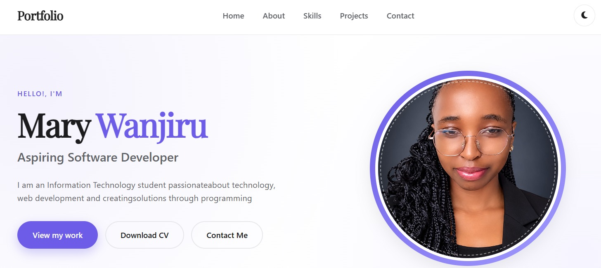
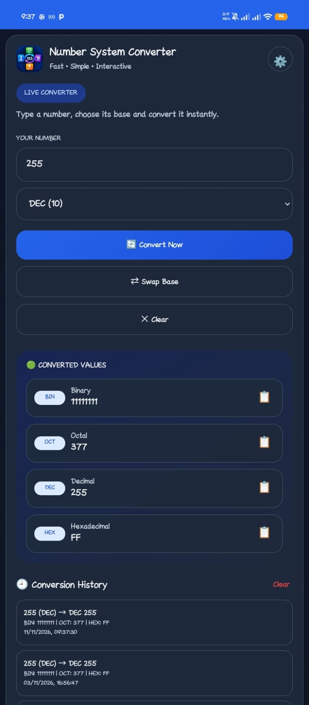

Project 1: Personal Portfolio Website
Developed a personal portfolio website using HTML, CSS, and JavaScript to showcase my skills, projects, and contact information. Implemented responsive design and interactive features.
Hello!, I'm
I am an Information Technology student passionate about technology, web development and creating solutions through programming
GET TO KNOW ME
I am a passionate and dedicated Information Technology student in my second year at Kirinyaga University with a strong interest in web development and programming. I enjoy creating innovative solutions through coding and continuously learning new technologies to enhance my skills. My goal is to contribute to impactful projects and grow as a software developer.
My goal is to become a skilled software developer, build meaningful digital solutions and continuously grow in the technology industry.
Let's ConnectWhat I am Learning
Web pages and applications
Styling and layout of web pages
Interactive web elements and functionality
Databases Fundamentals
Programming Language for web development, automation and data analysis
Programming Language for system programming and embedded systems
Object Oriented Programming Language for software development and game development
My recent Work

Developed a personal portfolio website using HTML, CSS, and JavaScript to showcase my skills, projects, and contact information. Implemented responsive design and interactive features.

Created a number system converter application that allows users to convert numbers between different bases (binary, decimal, octal, hexadecimal).
My Educational Background
Pursuing a Bachelor's degree in Information Technology, focusing on web development, programming, and software engineering.
Completed secondary education with a strong foundation in mathematics, science, and computer studies.
Completed primary education with a focus on core subjects, laying the groundwork for future academic pursuits.
What I Offer
Building responsive and user-friendly websites using HTML, CSS, and JavaScript.
Designing and managing databases to ensure efficient data storage and retrieval.
Creating mobile applications for Android and iOS platforms using modern frameworks.
Designing intuitive user interfaces and enhancing user experiences for web and mobile applications.
Get in Touch